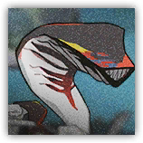

|
奸诈的墨魉。画家随手命名的化物，生得一副匕首似的轮廓。 专挑软处。狡猾而傲慢，会出卖冲在前面的同伴。总盯着身上带伤的人。 |
| AC 15（天生护甲） | 先攻 +3（13） |
| HP 50（9d8+9） | |
| 速度 30 尺 | |
| 调整 | 豁免 | 调整 | 豁免 | 调整 | 豁免 | |||||||||
|---|---|---|---|---|---|---|---|---|---|---|---|---|---|---|
| 力量 | 10 | +0 | +0 | 敏捷 | 16 | +3 | +5 | 体质 | 12 | +1 | +1 | |||
| 智力 | 12 | +1 | +1 | 感知 | 12 | +1 | +1 | 魅力 | 14 | +2 | +2 |
| 技能 隐匿+5，巧手+5，察觉+3 |
| 免疫 力竭，中毒 |
| 感官 黑暗视觉60尺，被动察觉13 |
| 语言 懂通用语但不能说 |
| CR 2（XP 450；PB +2） |
|
 |
迂回的墨魉。同一类的匕首形化物，更懂得绕到人背后。 本能寻隙。能一眼剥出各类敌人的要害并加以钳制，出手又快又准。 |
| AC 16（天生护甲） | 先攻 +4（14） |
| HP 66（12d8+12） | |
| 速度 30 尺 | |
| 调整 | 豁免 | 调整 | 豁免 | 调整 | 豁免 | |||||||||
|---|---|---|---|---|---|---|---|---|---|---|---|---|---|---|
| 力量 | 10 | +0 | +0 | 敏捷 | 18 | +4 | +6 | 体质 | 12 | +1 | +1 | |||
| 智力 | 13 | +1 | +1 | 感知 | 13 | +1 | +1 | 魅力 | 15 | +2 | +2 |
| 技能 隐匿+6，巧手+6，察觉+3 |
| 免疫 力竭，中毒 |
| 感官 黑暗视觉60尺，被动察觉13 |
| 语言 懂通用语但不能说 |
| CR 3（XP 700；PB +2） |